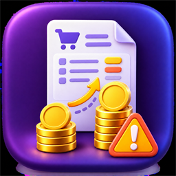

Give purchasers immediate context when a vendor's price changes, without interrupting the RFQ or purchase workflow.

Each purchase line compares the current unit price with the latest confirmed purchase for the same product and commercial vendor.
Review the previous price, signed percentage change, purchase reference, and purchase date directly from the purchase order.
Historical prices are converted into the current line's unit of measure and currency before the percentage is calculated.
A clear informational alert highlights qualifying changes while users remain free to edit, save, send, and confirm the order.
Configure the warning independently for each company from Purchase settings.
Comparisons stay within the active company, ignore draft and cancelled history, and update when the vendor, product, unit, currency, quantity, or current unit price changes.
The addon adds focused comparison fields and an informative warning to standard purchase orders. It does not add approvals, confirmation blocks, dashboards, or extra workflow states.
Licensed under LGPL-3.0 or later.